第4章 選択範囲
第2節 選択範囲の応用
デジタル画像は、RGBやCMYKなどのカラーモードで構成されています。
ここでは、それらのカラーモードで構成されるチャンネルパネルを紹介し、
チャンネルを使用した選択範囲の作成を説明します。
第1項 チャンネルパネルの使用
この項で学習する内容
- Photoshopでの選択範囲の取り扱いについて理解する。
- [チャンネルパネル]を使った選択範囲の作成・保存・読み込みの方法を習得する。
チャンネルパネルとは
RGBカラーモードに設定されている画像は、
「レッド」「グリーン」「ブルー」の3色それぞれを混合してフルカラーを再現しています。
この項で学習する[チャンネルパネル]は
その画像に使用されているRGBカラーのそれぞれの色の強さを
白から黒への２階調のグラデーションで表しています。
素材フォルダ「PS04」から、素材ファイル4_2_1_01.psdを開きましょう。
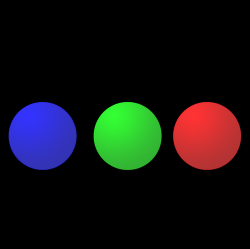
メニューバーの[ウィンドウ]-[チャンネル]を選択し、[チャンネルパネル]を表示します。
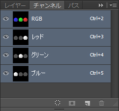
「レッド」チャンネルを選択し、表示を切り替えてみます。
「レッド」チャンネルでは元の赤い円の場所だけが白く表示され、
それ以外が濃いグレーの表示になっています。
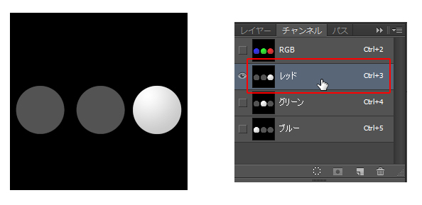
他の2つのチャンネルも確認してみてください。
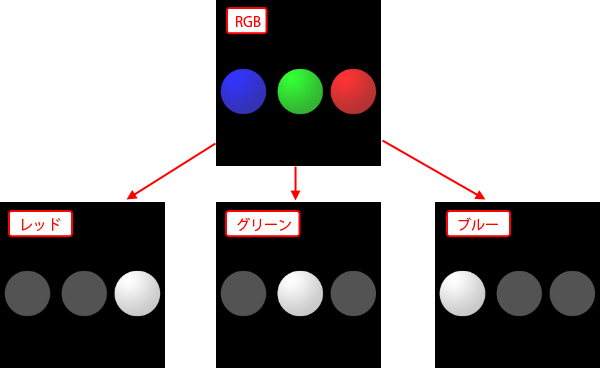
対応する各カラーの強さが強いほど白に、弱い箇所は黒と、
2階調で表わされていることが分かります。
確認ができたら[チャンネルパネル]の「RGB」をクリックし、元の表示に戻しましょう。
[チャンネルパネル]は単に各カラーの状態を確認するためだけに利用するのではなく、
一般的な利用用途としては、 選択範囲の作成・保存・管理などで利用されています。
このファイルは確認だけでの使用です。
一旦閉じてください。
選択範囲を保存する
選択範囲を作成して何らかの加工を終えたのち、
選択範囲を解除してしまうと、また修正が必要な場合は
改めて選択範囲を作成しなおさなければなりません。
そういうことが無いように、選択範囲を保存し呼び出す方法を習得しましょう。
素材フォルダ「PS04」から、素材ファイル4_2_1_02.psdを開きましょう。
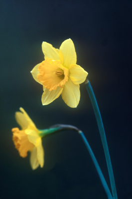
「ぼかし」を《20px》に設定した[長方形選択ツール]で、
任意の大きさの選択範囲を作成する。
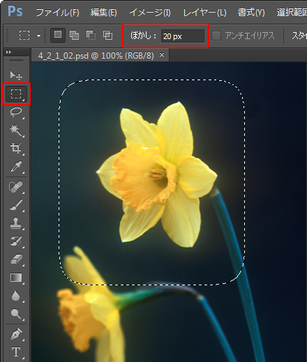
メニューバーの[選択範囲]-[選択範囲を保存]を選択し、
[選択範囲を保存]ダイアログボックスで[名前]を「選択練習」にして保存します。
※それ以外の設定は変更しません。
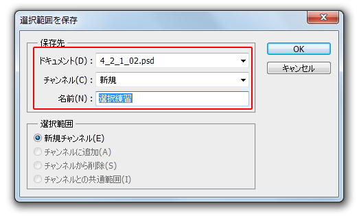
[チャンネルパネル]を開き、保存した選択範囲「選択練習」が
新しいチャンネルとして登録されていることを確認します。
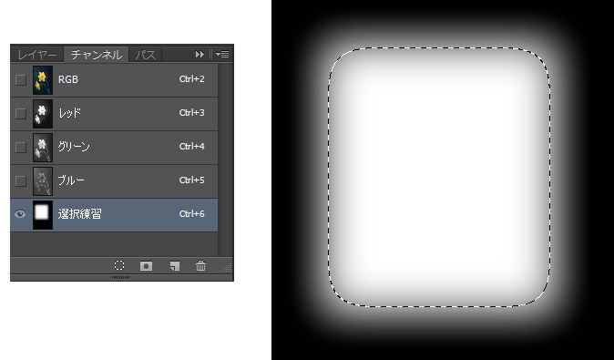
「RGB」チャンネルを選択して元の表示に戻し、
一旦、作成した選択範囲は解除しておきます。
ワンポイント
[チャンネルパネル]の保存された選択範囲を確認すると分かりますが、
Photoshop内では、選択箇所を「白」で、選択箇所以外を「黒」で表現しています。
また「ぼかし」のかかった選択範囲については白から黒へのグラデーションで表現されます。
この点については、次項以降で学習する機能でも関わってきますので、よく理解しておきましょう。
保存した選択範囲を読み込む
先ほど保存した選択範囲を読み込みます。
メニューバーの[選択範囲]-[選択範囲を読み込む]を選択し、
[選択範囲を読み込む]ダイアログボックスで、
[チャンネル]に先ほど保存した選択範囲「選択練習」を選択します。
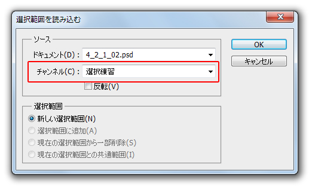
先ほど保存した選択範囲が再度、表示されます。
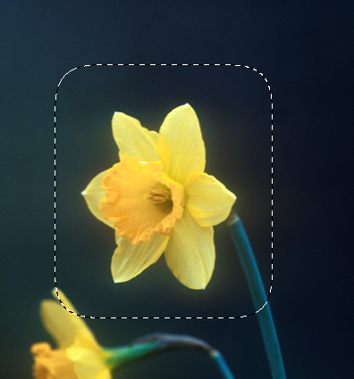
ファイルは閉じずに、選択範囲は一旦解除します。
ワンポイント
[選択範囲を読み込む]ダイアログボックスで、同時に開いているファイルがあれば、
「ドキュメント」から別ファイルを選択し、そのファイルの選択範囲を読み込むこともできます。
また、既に選択範囲が存在している状態であれば、
選択範囲オプションで、選択範囲の追加や削除も可能です。
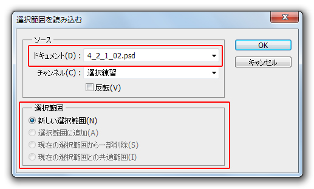
既存のカラーチャンネルから選択範囲を作る
[チャンネルパネル]に保存された選択範囲は、
白から黒への2階調のグラデーションで表現されている点は理解できましたでしょうか。
この「白から黒へのグラデーション」という点を利用して、
[チャンネルパネル]を使って新規選択範囲を作成することもできます。
ここでは素材ファイルの花の部分の選択範囲を作成してみましょう。
まず[チャンネルパネル]を開き、「レッド」「グリーン」「ブルー」の各チャンネルを確認します。
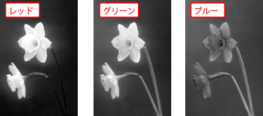
今回は花の部分の選択範囲を作成したいので、
それぞれのチャンネルで、花の部分が一番白く表示されるチャンネルが
「レッド」チャンネルであることが分かります。
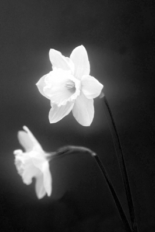
この「レッド」チャンネルを複製して選択範囲に加工します。
「レッド」チャンネルを選択し、パネル右上のパネルメニュー から
から
[チャンネルを複製]を選択します。
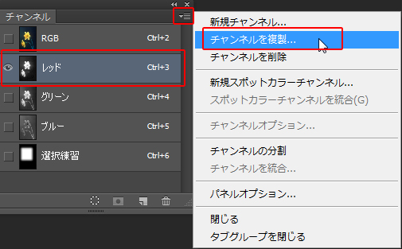
[チャンネルを複製]ダイアログボックスが表示されますので、
下記の設定で複製保存します。
新規名称：選択範囲（花）
ドキュメント：4_2_1_02.psd
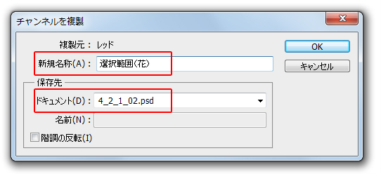
作成された「選択範囲（花）」は、白黒がはっきりした状態ではありません。
もう少しコントラストがはっきりするように修正します。
一旦、「RGB」チャンネルを選択して通常の表示に戻し、
複製したチャンネル「選択範囲（花）」を1回クリックして選択した後、
メニューバーの[イメージ]-[色調補正]-[レベル補正]を選択し、
[レベル補正]ダイアログボックスを表示させます。
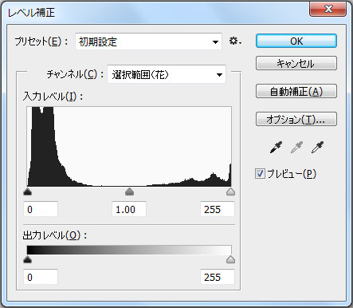
※[レベル補正]は画像の明るさとコントラストを調整する色調補正機能です。
色調補正の詳細については第7章で学習します。
ここでは指示通り設定してください。
[レベル補正]ダイアログボックスが表示されたら、
下図を参考に、中央左側にある数値入力ボックスを《100》に、
中央右側にある数値入力ボックスを《160》に設定します。
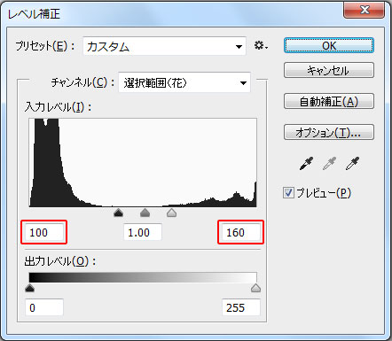
これで花の部分が白く、それ以外が黒にコントラストがはっきりした画像になりました。
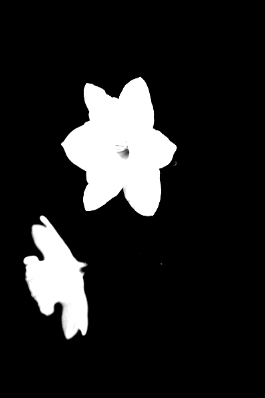
花の中央にまだ少し黒い箇所がありますので、
描画色を「白」にした[ブラシツール]で塗りつぶしておきます。
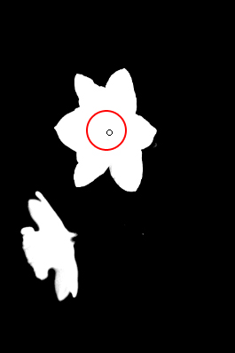
[チャンネルパネル]の「RGB」を選択し、元の表示に戻したら
メニューバーの[選択範囲]-[選択範囲を読み込む]を選択し、
作成した「選択範囲（花）」を読み込みましょう。
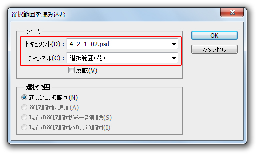
[チャンネルパネル]から選択範囲が作成できました。
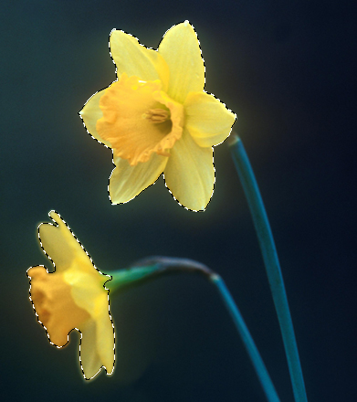
今回の練習のように、この後の第7章で学習する色調補正などとも組み合わせることで、
マウスで画像をなぞることなく選択範囲を作成することもできます。
ファイルは閉じずに、選択範囲を解除します。
新規チャンネルで選択範囲を作成する
既存のカラーチャンネルを複製して選択範囲を作成する以外に、
黒一色の新しいチャンネルを作成し、選択範囲を作成することもできます。
まず、[チャンネルパネル]のパネル右上のパネルメニュー から
から
[新規チャンネル]を選択します。
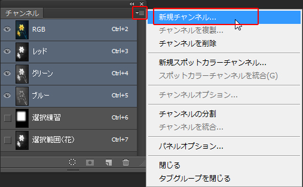
[新規チャンネル]ダイアログボックスで、チャンネル名が設定できます。
今回は名前を変えずに「アルファチャンネル１」のままで新規チャンネルを作成します。
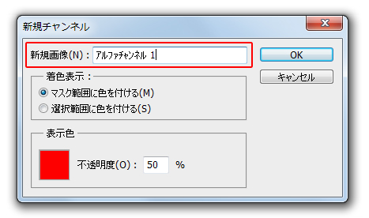
作成された「アルファチャンネル１」を選択して
描画色を「白」にした[ブラシツール]で画像内を適当に描画します。
※ブラシの直径などは任意で設定してかまいません。
描画ができたら[チャンネルパネル]の「RGB」を選択して通常の表示に戻し、
メニューバーの[選択範囲]-[選択範囲を読み込む]から
作成した選択範囲「アルファチャンネル１」を読み込みます。
ブラシのストロークなどを生かした選択範囲が必要な場合は、
このような方法で選択範囲を作成できます。
この項のまとめ
- [チャンネルパネル]とは
- ・画像で使用される各カラーチャンネルの色の強さを確認できるパネル。
・主に選択範囲の作成・保存・管理を行うために使用される。 - 選択範囲の保存と読み込み方法
- ・選択範囲を作成し、メニューバーの[選択範囲]-[選択範囲を保存]で名前を付けて保存できる。
・保存された選択範囲は[チャンネルパネル]内に新規チャンネルとして登録されている。
・保存した選択範囲は、メニューバーの[選択範囲]-[選択範囲を読み込む]から読み込みできる。 - [チャンネルパネル]内の選択範囲
- ・保存された選択範囲は[チャンネルパネル]内で、選択箇所は「白」に、選択箇所以外は「黒」の2階調のグラデーションで表現されている。
・白から黒へのグラデーションという特徴を生かして、[チャンネルパネル]で既存のカラーチャンネルから新たに選択範囲を作成できる。
・新規チャンネルを作成することで、描画色を「白」にした[ブラシツール]などのストロークを生かした選択範囲が作成できる。
以上でこの項の学習は終了です。
ファイルは閉じて次の項へ進んでください。